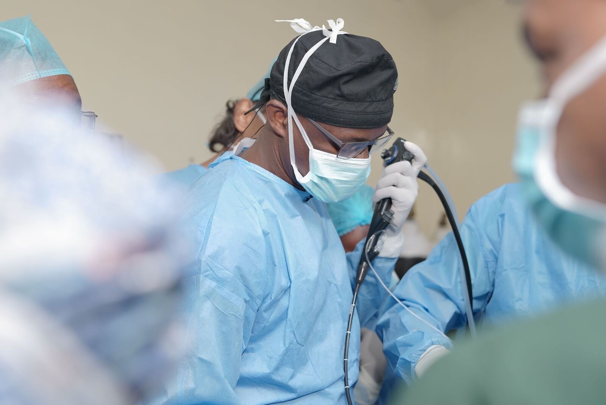
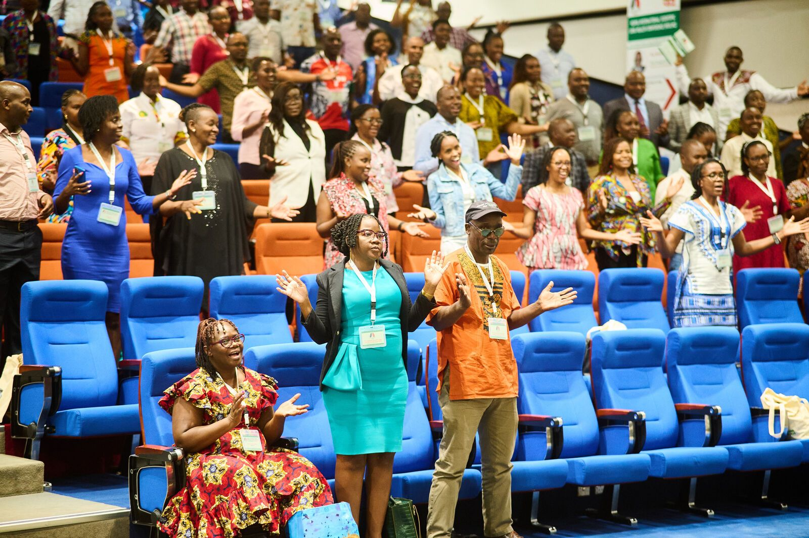
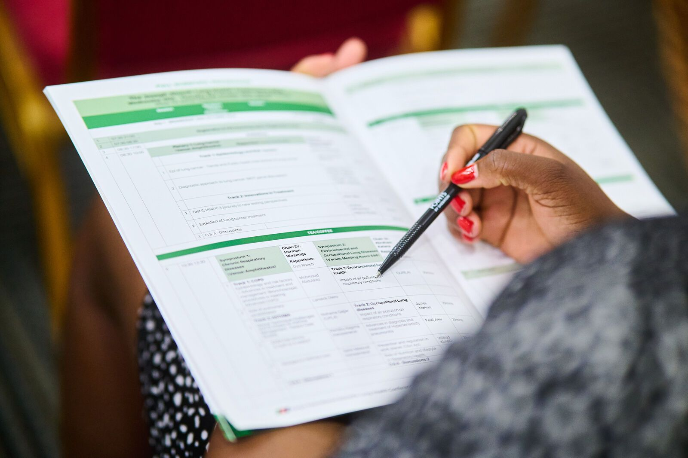
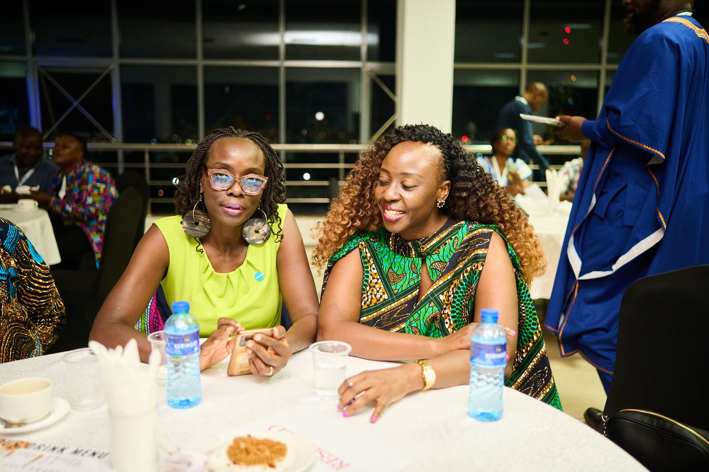

Kenya's home for respiratory health.
The professional society for clinicians, researchers and partners advancing lung health through prevention, research, education and advocacy.

Six ways ReSoK moves lung health forward.
Education
Hands-on workshops, CMEs and webinars, and a growing Virtual Academy.
Learning →Research
Partner on LIGHT, ITARA and ALBORADA, shaping TB and respiratory care.
Research →Advocacy
Awareness days, community screening, and support for national TB policy.
Lung Health →Events
KISLHC, national symposia and CMEs that bring the field together.
Events →Professional development
CPD tokens and certificates for accredited learning, kept in My ReSoK.
Membership →Lung health
Plain-language information for patients and the public.
Lung Health →Where the community meets.

7th Kenya International Scientific Lung Health Conference
From Detection to Recovery — integrated pathways and patient-centred innovations in lung health.
- 01Oct 2026CME · Zoom · Upcoming
Diagnosing Bronchiectasis on Chest CT Scan
- 28Sep 2026Webinar · Online
Infectious Lung Disorders: Spectrum of Surgical Treatment Options
- 29Sep 2025Symposium · The Nairobi Hospital
TB & Lung Health Symposium
- Aug2026Workshop · Coast General, Mombasa
Interventional Pulmonology & Advanced Bronchoscopy
From joining to certificate, in one place.
Membership, CPD, learning and events connect through My ReSoK. What works today is marked live; what is being built is marked honestly.
- MembershipApply, pay by M-Pesa paybill, get your number and cardLive
- My ReSoKProfile, payments, renewal and certificatesLive
- CPDTokens from accredited CMEs, webinars and workshopsLive
- LearningVirtual Academy courses with quizzes and certificatesIn development
- EventsRegister for events from your accountIn development
- GovernanceVote in Society elections onlineIn development
The conditions Kenya's clinicians face.

Research that moves lung health forward.
ReSoK partners on programmes that shape how TB and respiratory disease are understood and treated across Kenya and Africa.
LIGHT
Six-year UK aid-funded programme on gendered pathways to TB care in urban settings. ReSoK is the Kenya research partner.
Urban TB · GenderITARA
Four-year NIHR-funded programme developing integrated TB and respiratory care in Africa.
Integrated careALBORADA
Cambridge-Africa research into interstitial lung disease in Kenya and a national multidisciplinary approach to ILD care.
ILDBecome part of Kenya's respiratory community.
- CPD tokens and certificates for accredited learning
- Members' learning library, recordings and publications
- Assemblies and working groups
- Your digital membership card in My ReSoK
